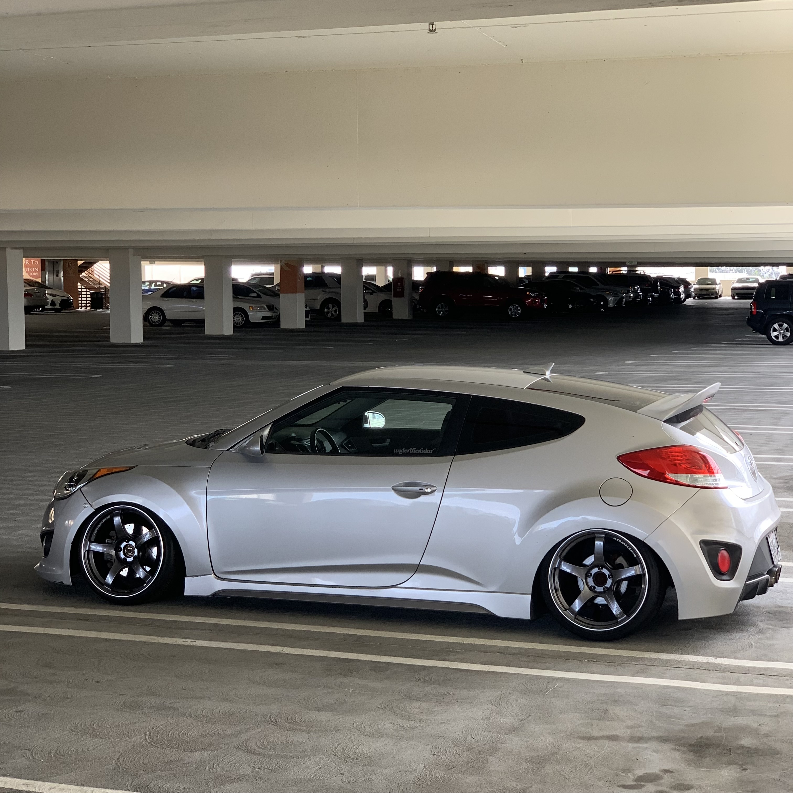

<!DOCTYPE html>
<html lang="en">
 <head>
 <meta charset="utf-8">
 <title>Kingston's About Page</title>
 </head>
</html>
<body>
    <!--First section-->
     <div style="background-image:
    url('img/10.jpg');
     background-size: cover; height:400px; padding-top:80px;text-align: center;">
        
        <h1 style="font-size:40px;color:white;">Kingston's Very First Website</h1>
        <p style="font-size: 25px;color: white;">
            <em>I know, I know. Impressive, huh?</em>
        </p>
        <nav style="text-align: left;">
            <ul>
                <li style="font-size: 20px; color: white"><a href="index.html">Home</a></li>
                <li style="font-size: 20px; color: white"><a href="about.html">About</a></li>
                <li style="font-size: 20px; color: white"><a href="contact.html">Contact</a></li>
            </ul>
        </nav>
     </div>
</body>
     </div>
     <div style="height:400px; margin:100px;">
        <h1>ABOUT ME</h1>
        <p style="line-height: 2.0; font-size:20px;">Hi. I am <strong>Kingston</strong> and I'm currently a senior at CSUF.<br>
            If all goes as planning, I will be graduating at the end of this semester (Dec 2023). <br>
            I am mainly looking to work as a back-end software engineer, although I'll take any opening in the computer science field for the right amount of money.<br>
            Outside of acedemics, I have a few hobbies. I am a car enthusiast, mainly into <b>stanced/cambered</b> cars. This refers to cars that are low to the ground and have tilted wheels.<br>
            I also enjoy collecting toys and figures, mainly transformers and bakugan. You'd be surpised what a small ball of plastic is worth today. There are some that go well over $1000 for one!<br>
            </p>
        
     </div>
     <br/>

     <p style="font-size: 20px; color:#1F9AFE;text-align: center;"><a href="index.html";>Return Home</a></p>
     <footer style="height:auto; background-color:#F7C201;">
        <h1 style="color:black; padding:40px; margin:0;
        text-align:center;">Made with 🤍 at Kingstons House </h1>
    </footer>
